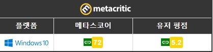

게임의 경제 시스템은 굉장히 호평받는 요소 중 하나다. 사망 시 모든 것을 드랍하는 무제한 PvP시스템의 장점을 십분 활용하여, 아이템 파괴와 제작이 선순환하며 성공적으로 인플레이션을 억제하고 있다. 누군가 아이템을 제작하고 있다면 동시에 다른 곳에서는 PvP가 이루어져 아이템이 파괴되고 있기 때문. 게임 재화의 가치가 일정 수준 이상으로 항상 유지되는, 다른 게임에 비해 월등한 경제시스템을 가지고 있다.
이렇듯 장점이 확실하지만 단점도 매우 확실하므로 호불호가 강한 게임이다. 자유도가 높고 최신 MMORPG 게임과는 확연히 다른 특성 때문에 초반에 신규 유저들이 적응하기 힘들어하며,[16] 튜토리얼이 존재하긴 하지만 매우 간단하게만 진행되기 때문에 신규 유저들에게 게임의 모든 요소들을 친절하게 설명하지 않아 초반에 아무것도 모르는 신규 유저들이 채팅창에 질문 공세를 퍼붓는 흔한 일이다. 게임 자체가 하드코어한 요소가 강하기 때문에 아무런 정보나 공략도 없이 레드존이나 블랙존에 아무것도 모르고 고티어 장비를 들고 입장 후 갱커들에게 갱킹을 당해 전재산을 잃고 의욕을 잃고 접는 유저들도 심심치 않게 볼 수 있다.
또한 가장 치명적인 단점은 핑과 서버 문제. 전세계 단일 서버 게임이라 모든 유저가 한 곳에서 게임을 같이 플레이할 수 있다는 장점이 있지만 동시에 이것이 큰 단점이 된다. 결국 서버가 미국에 있다는 물리적인 한계에서 자유롭지 못하여 한국에서는 VPN을 사용하지 않으면 핑이 무조건 180~200대 초반을 오가서 PvP같은 컨텐츠에서 한국 유저들은 상대적으로 불리하며 북미에서 플레이하지 않는 이상 전세계 모든 유저들은 이 문제에서 자유롭지 못하다.미국애들 빼고 다 같이 느리니까 괜찮을지도
하지만 이에 대한 반론도 있다. 직접 플레이해보면 알겠지만 생각보다 핑이 느려도 캐릭터가 즉각적으로 반응하고 움직이는 것을 알 수 있다. 같은 핑의 다른 게임보다 알비온이 더 플레이하기 쾌적하게 느껴진다. 이는 제작사인 SBI가 단일서버 환경을 위해 많은 기술적 노력을 한 덕분으로, 서버가 캐릭터의 움직임과 스킬을 유저의 화면에 뜨는대로 우선적으로 인식하고 판정하는 기술을 도입했기 때문이라 밝힌 바 있다. 알비온에서 마이크로 컨트롤 PvP의 정수라 할 수 있는 오염된 던전 랭킹을 봐도 최상위권에 한국인들이 있는 것을 알 수 있다. 손가락으로 핑을 극복할 수 있다는 얘기.
초반에 DDoS 공격과 개발자들의 미약한 대응 때문에 많은 평점 테러를 받아 실제 게임성에 비해 리뷰 점수와 유저 스코어는 낮은 편이다. 유저 리뷰를 종합해 보면 호불호가 강한 게임으로써 취향에 맞은 유저들은 만점을 주는 반면에, 취향에 맞지 않으면 0점을 주는 유저들도 수두룩하다. 주로 고전 샌드박스 MMORPG를 즐겨 했던 30~40대 올드 게이머들과 리그 오브 레전드의 조작감에 익숙하면서 MMORPG를 좋아하는 유저층의 엄청난 지지를 받고 있다. 결론은 전반적으로 잘 만들어지고 개성 넘치는 게임이지만 초창기의 DDoS 사건, 단일 서버로 인한 쾌적하지 못한 플레이 문제 때문에 게임의 완성도와 재미에 비해서 비판받는 비운의 게임으로, 매니악한 재미를 지닌 호불호가 확실히 갈리는 게임이다. 하지만 최근 모바일 유저의 유입으로 인해 유저층은 늘어나고 있으며, 꾸준한 광고로 인해 게임의 인기는 계속 상승 중이다.